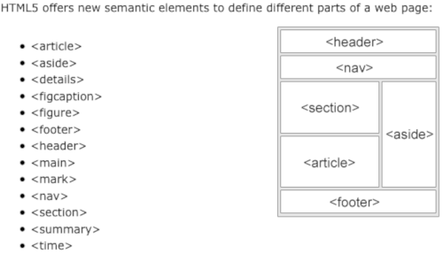

## Inclusive Design Patterns
## Aufbau * Situation und Ausblick * Tools * Allgemeine Dinge * Best Practices * HTML 5 und ARIA Tags * Zoombarkeit * Schriftart * Sonstiges * Technische Argumente
## Situation in Deutschland * 5% Rot-Grün Seeschwäche (9% der Männer, 0,8 % der Frauen) * 4% Legasteniker * 164.000 Blinde * Einschränkungen im Alter: https://service.destatis.de/bevoelkerungspyramide/#!y=2018&v=3
## Tools * Plugins: z.B. https://www.funkify.org/ * Komandozeilenbrowser (lynx) * Screenreader
## Generelles * Klare Trennung von Inhalt, Design und Logik * Zoombarkeit * alt="" für Bilder und Icons
## Best Practices
### HTML 5 Semantische Struktur nutzen * Semantische Tags von HTML5 nutzen:  * ```<html lang="de">``` - Lang Atribut bestimmt in welcher Sprache Screenreader vorlesen * Aria Tags (<a href="https://de.wikipedia.org/wiki/Accessible_Rich_Internet_Applications">Accessible Rich Internet Applications</a>)
## Zoombarkeit * Relative Einheiten (em,%) * <a href="zoom-examples.html">Erzwungener Zoom in den Browsereinstellungen</a>
## Fonts * OpenDyslexic * https://www.opendyslexic.org/
## Sonstiges * Leichte Sprache * https://www.nachrichtenleicht.de/ * Simple Englisch Wikpedia: https://simple.wikipedia.org/wiki/Main_Page * Besonders auf Behördenseite auch für die breite Bevölkerung nützlich
## Technische Argumente für inklusives Design * Behindertengerecht = Robotergerecht => SEO * Zombarkeit => Responsive * Trennung von Inhalt und Optik => Refactoring * Shortcuts für Standardfunktionen einer Webseite
## The End Slides: https://stefangrotz.github.io/presentation.inclusive-design-patterns/